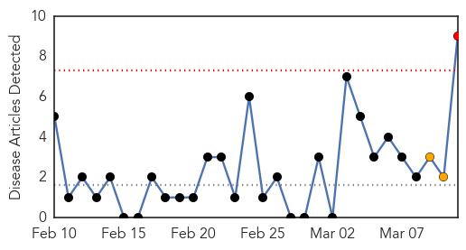

Measles
30-Day Web Trend
6 alerts, 5 warnings

30-Day Twitter Trend
0 alerts, 0 warnings

Article Locations

Article Confidences

Top Articles:
- 0.993
- B.C. gears up for measles after two new Chilliwack cases
- 0.993
- Measles Is Back in Connecticut, New York and Other States
- 0.983
- Measles Outbreak in NYC Grows by 3 Cases to 19 Total
- 0.980
- As many as 100 kids in Fraser Valley, B.C. may have measles
- 0.925
- Measles alert for Sunshine Coast after infected man went to Caloundra RSL
- 0.920
- Measles outbreak originated in Netherlands
- 0.877
- Measles outbreak will not lead to mandatory vaccinations in B.C.
- 0.836
- Measles scare on Qld's Sunshine Coast
- 0.789
- Robyn Urback: Vaccines don't cause autism or usurp the role of God. They prevent measles
- 0.769
- Year’s second case of rubella confirmed in Chinese student
- 0.530
- A Mega Disaster In Waiting
Top Tweets:
-
No tweets found for Mar 11, 2014
Cholera
30-Day Web Trend
1 alerts, 2 warnings

30-Day Twitter Trend
1 alerts, 0 warnings

Article Locations

Article Confidences

Top Articles:
- 0.978
- Haitians sue UN over cholera epidemic
- 0.977
- UN slapped with another class action lawsuit over Haiti cholera
- 0.977
- 1,500 Cholera victims in Haiti file lawsuit against UN in New York today
- 0.974
- Victims sue UN for the 9,000+ Haiti cholera deaths
- 0.969
- U.N. slapped with another class action lawsuit over Haiti cholera - World
- 0.962
- Haitians sue United Nations over cholera epidemic
- 0.889
- Haitians file new lawsuit against United Nations over cholera outbreak
- 0.824
- 1,500 Haitian cholera victims accuse U.N. of causing outbreak in new lawsuit
- 0.771
- Haiti cholera victims file suit against UN
Top Tweets:
-
No tweets found for Mar 11, 2014